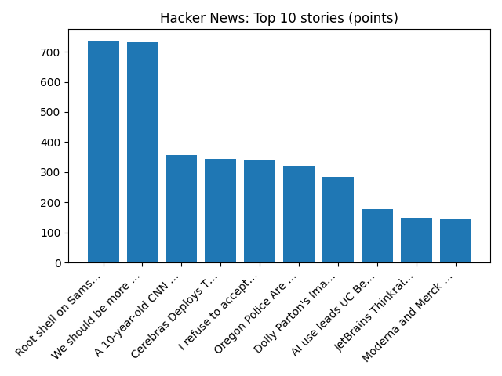

YOUR DAILY INTELLIGENCE BRIEF · 2026-10-25
The world, in focus.
No recent news coverage available.
🌍 Global coverage
🌌 Beyond Earth

Dark Matter in a Simulated Universe
📜 On this day
- 2023 A mass shooting occurs in two locations in Lewiston, Maine. 18 people are killed and 13 more injured.
- 2010 A magnitude 7.8 earthquake strikes off Indonesia's Mentawai Islands, triggering a tsunami that kills at least 400 people.
- 2009 The October 2009 Baghdad bombings kill 155 and wound at least 721.
- 2001 Microsoft releases Windows XP, which becomes one of Microsoft's most successful operating systems.
📈 Topic activity
Source health: 24/24 healthy
View original detailed report
Daily Knowledge Garden — 2026-10-25
🧭 Daily Summary
Global coverage includes Serbia's veteran ruler Vučić concedes election to student-led protest movement; Serbia’s strongman leader Vucic concedes defeat to student-led movement in seismic political shift - AP News; Trump invokes 9/11 in urging Michigan voters to oppose Muslim Senate candidate El-Sayed - Reuters. Local coverage includes Kyle King, Kaylee Slade win 2026 Marine Corps Marathon - NBC4 Washington; The Burn celebrates 10th anniversary with books for kids fundraiser - The Burn.
🌍 Global News (cross-source)
- Serbia's veteran ruler Vučić concedes election to student-led protest movement — BBC — World
- Serbia’s strongman leader Vucic concedes defeat to student-led movement in seismic political shift - AP News — AP — Headlines (Google News)
- Trump invokes 9/11 in urging Michigan voters to oppose Muslim Senate candidate El-Sayed - Reuters — Reuters — World (Google News)
- US appeals court appears skeptical of Trump DOJ's lawsuit over California voter rolls - Reuters — Reuters — Headlines (Google News)
- Two men killed by falling trees as Storm Boelo leaves 160,000 properties without power — BBC — Science
🏙️ Local News
- Kyle King, Kaylee Slade win 2026 Marine Corps Marathon - NBC4 Washington — Google News — Northern Virginia
- The Burn celebrates 10th anniversary with books for kids fundraiser - The Burn — Google News — Northern Virginia
- Northern Virginia high school football scores for Oct. 23 - InsideNoVa — Google News — Northern Virginia
- Amazon backs off Northern VA data center plan months after purchase - The Real Deal — Google News — Northern Virginia
- Burke Centre Parkway westbound permanent access changes at Fairfax County Parkway begin Oct. 26 - Virginia Department of Transportation (.gov) — Google News — Northern Virginia
🚀 Hacker News (Top 5)
- Local Wikipedia: Wikipedia, but only for things a half hour walk from you — 1616 points, 251 comments
- We should be more ambitious with the software we build — 520 points, 463 comments
- The Goose Programming Language — 462 points, 280 comments
- America has lost 200k of jobs in media, film and the arts. How much is AI? — 404 points, 421 comments
- Meta Ignores Brazilian Court Order to End Bolsonaro Favoritism — 376 points, 230 comments

🌍 Wikipedia — On This Day (selected)
- 2023 — A mass shooting occurs in two locations in Lewiston, Maine. 18 people are killed and 13 more injured.
- 2010 — A magnitude 7.8 earthquake strikes off Indonesia's Mentawai Islands, triggering a tsunami that kills at least 400 people.
- 2009 — The October 2009 Baghdad bombings kill 155 and wound at least 721.
- 2001 — Microsoft releases Windows XP, which becomes one of Microsoft's most successful operating systems.
- 1999 — A Learjet 35 crashes in Mina near Aberdeen, South Dakota, killing all six people on board, including PGA golfer Payne Stewart and golf course designer Bruce Borland.
🎲 Wikipedia — Random Article
Back Mountain
The Back Mountain is a region and former census-designated place (CDP) in Luzerne County, Pennsylvania, United States. The region has a total area of 117.59 square miles (304.6 km2).
https://en.wikipedia.org/wiki/Back_Mountain
🌌 NASA APOD
Dark Matter in a Simulated Universe
Feed Health
- Reuters — Headlines (Google News): ok (15 articles)
- Reuters — World (Google News): ok (15 articles)
- Reuters — Business (Google News): ok (15 articles)
- BBC — World: ok (15 articles)
- BBC — Tech: ok (15 articles)
- BBC — Business: ok (15 articles)
- BBC — Science: ok (15 articles)
- AP — Headlines (Google News): ok (15 articles)
- AP — Politics (Google News): ok (15 articles)
- AP — Business (Google News): ok (15 articles)
- NPR — Top Stories: ok (10 articles)
- NPR — Politics: ok (10 articles)
- NPR — Business: ok (10 articles)
- NPR — Science: ok (10 articles)
- NPR — Technology: ok (10 articles)
- ScienceNews: ok (15 articles)
- ScienceDaily — Top: ok (15 articles)
- Nature — Technology: ok (15 articles)
- Google News — Northern Virginia: ok (15 articles)
- Google News — Northern Virginia traffic: ok (15 articles)
- Google News — Northern Virginia weather: ok (15 articles)
- Wikipedia — On This Day: ok (10 articles)
- Wikipedia — Random: ok (1 articles)
- NASA — APOD: ok (1 articles)
Runs so far today: 3